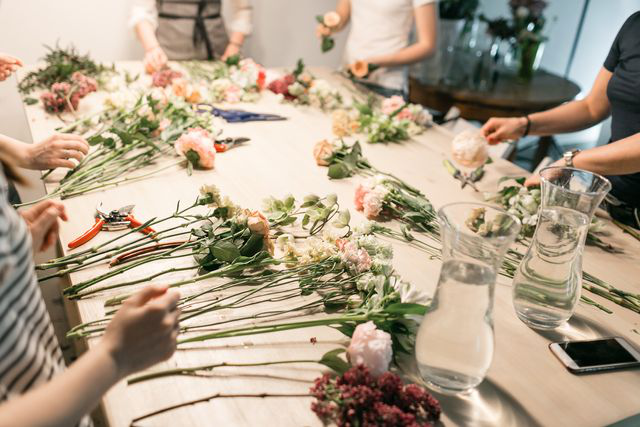

Do you wanna get more experience of making Nosegay on our own Watch this!!
For Begineer
Putting together a stunning bouquet of flowers requires more than just pure passion. In reality, it involves skills such as thinking and planning on how you would like the flower to be assembled alongside a talented eye for colour, shape, artistic coordination, light and balance. A complex art form, to say the least, the activity of assembling flowers can actually be a soothing and calming experience if you enjoy the process of crafting out beautiful floral creations. Still up for the challenge? Any of these 9 best flower arrangement classes in Singapore will transform your hobby of designing flowers into a splendid masterpiece! Note: This list is strictly not in order.Click to watch DIY Video

For Professional
Be let in on the know-how of floral arrangement through Nicole’s Flower’s teachings in the technicalities of bouquet arrangement. By doing this, you are also getting in touch with your passion for floral care. The intimate 2-hour session workshop can accommodate up to 10 students and will enlighten you on the fundamentals of flower arrangement. Their curriculum includes how to provide proper care for your flowers, the safe usage of tools, basics and techniques of floral design, and a hands-on session to put into practice your theoretical knowledge. If you start to feel hungry midway during the lesson, not to fret, as light snacks and refreshments are provided! Do get in touch with them if you have the interest to find out more about their workshop schedules. They also allow for arrangement of private floral workshops at the location of your choice, with a minimum of 5 people. Not only will you leave with essential knowledge in the art of flower making, but you’ll also get to bring home your very own enchanting floral creation! All these and more under the guidance of their dedicated and patient team, only at Nicole’s Flower.Click to watch DIY Video